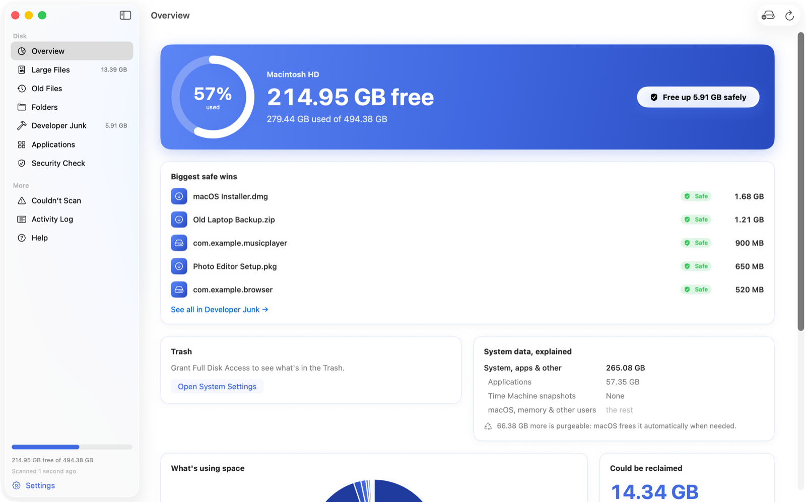
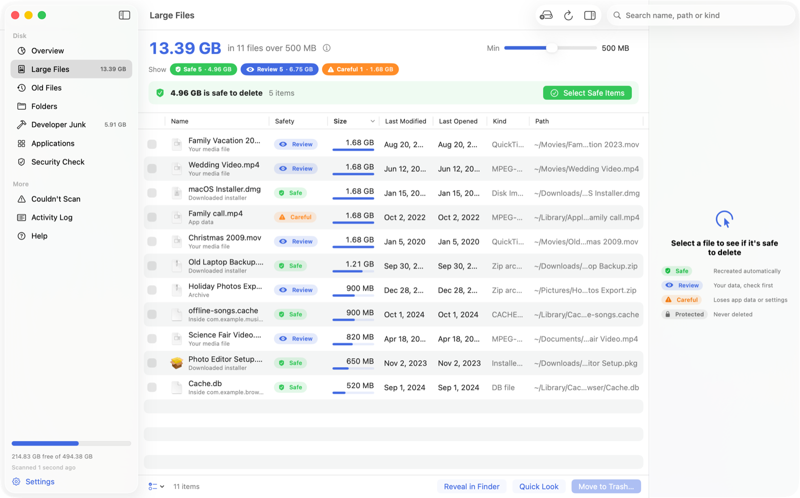
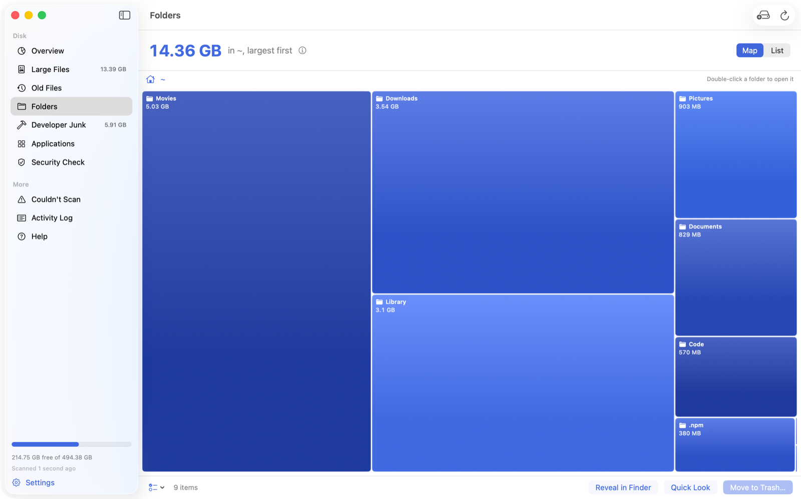
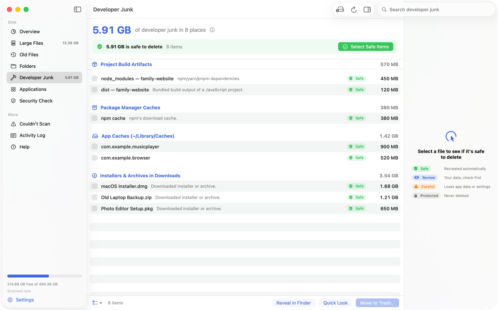

Know before you delete
Each file is labelled with what it is and what you'd lose by deleting it.
Find out what's using your disk space and clear it out, without deleting anything you still need.

Each file is labelled with what it is and what you'd lose by deleting it.

Folders are drawn to scale. Double-click one to open it.

Select Safe Items ticks everything that's safe to remove. You see the list before anything is moved to the Trash.

Files you haven't opened in a long time, largest first.
Removes an app along with the settings and caches it leaves in your Library.
Lists what launches when your Mac starts and flags anything unsigned.
No sign-up or tracking. It reads file names and sizes, not their contents.
Unlikely. macOS, your passwords, iCloud Drive, Mail and Photos can't be deleted from SpaceSweeper, and everything else goes to the Trash first, so you can put it back.
macOS warns about apps that aren't registered with Apple's paid developer program. You confirm once; the install guide shows where. Updates don't trigger it again.
Without it, macOS hides some folders, such as Mail and other apps' data, and the totals come out low. SpaceSweeper still works without it.
Empty the Trash. If it still looks off, macOS may be holding the space as "purgeable" and will free it when it needs to.
No. The only time it goes online is to check for updates, which you can turn off. See the privacy policy.
If it runs macOS 14 Sonoma or later, yes, on Apple and Intel Macs alike. Check under Apple menu › About This Mac.
Free, for macOS 14 or later.